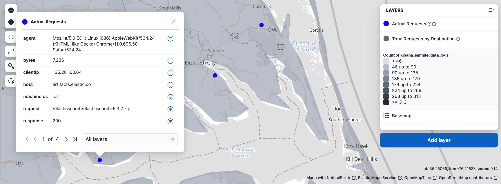
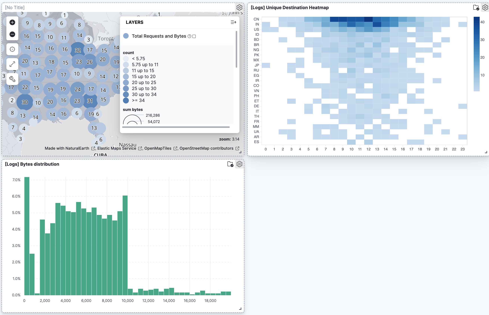
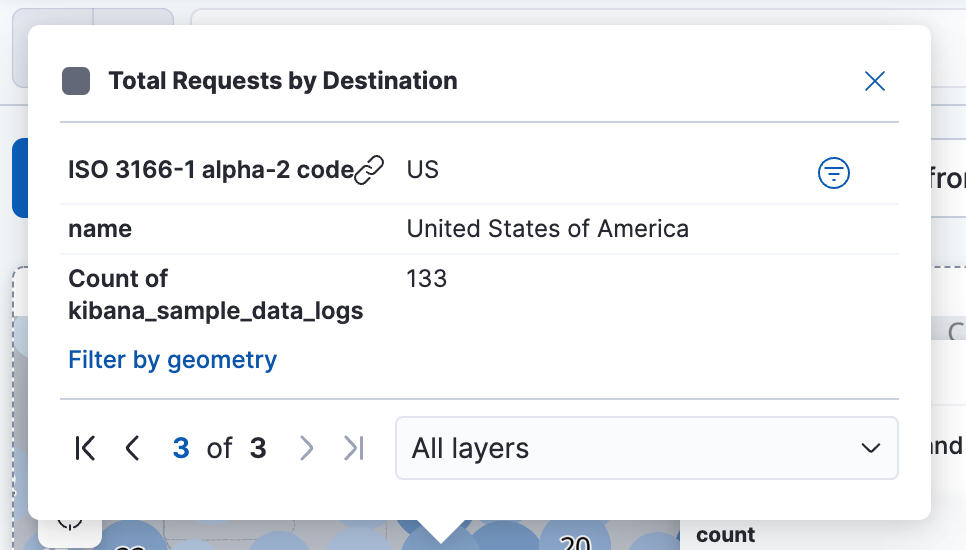
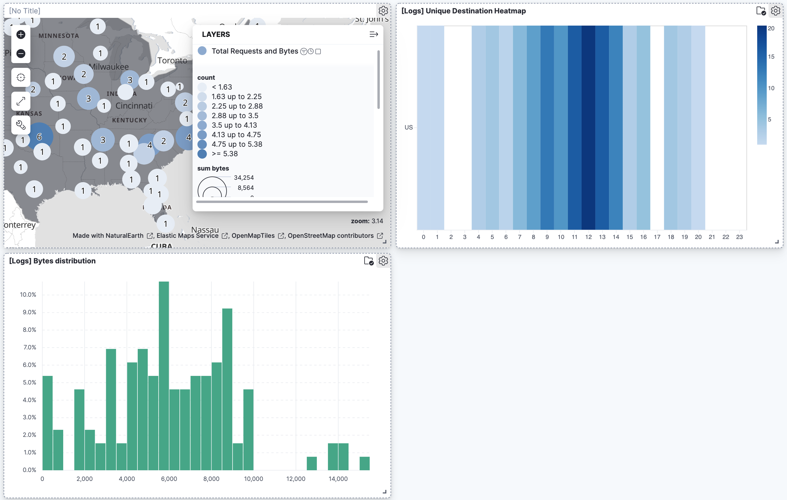

Build a map to compare metrics by country or region
editIf you are new to Maps, this tutorial is a good place to start. It guides you through the common steps for working with your location data.
You will learn to:
- Create a map with multiple layers and data sources
- Use symbols, colors, and labels to style data values
- Embed a map in a dashboard
- Search across panels in your dashboard
When you complete this tutorial, you’ll have a map that looks like this:
Prerequisites
edit- If you don’t already have Kibana, set it up with our free trial.
- This tutorial requires the web logs sample data set. The sample data includes a [Logs] Total Requests and Bytes map, which you’ll re-create in this tutorial.
- You must have the correct privileges for creating a map. If you don’t have sufficient privileges to create or save maps, a read-only icon appears in the toolbar. For more information, refer to Granting access to Kibana.
Step 1. Create a map
edit- Open the main menu, and then click Dashboard.
- Click Create dashboard.
- Set the time range to Last 7 days.
- Click the Create new Maps icon .
Step 2. Add a choropleth layer
editThe first layer you’ll add is a choropleth layer to shade world countries by web log traffic. Darker shades will symbolize countries with more web log traffic, and lighter shades will symbolize countries with less traffic.
- Click Add layer, and then click Choropleth.
- From the EMS boundaries dropdown menu, select World Countries.
-
In Statistics source, set:
- Data view to kibana_sample_data_logs
- Join field to geo.dest
- Click Add and continue.
-
In Layer settings, set:
-
Name to
Total Requests by Destination - Opacity to 50%
-
Name to
-
Add a Tooltip field:
- ISO 3166-1 alpha-2 code is added by default.
- Click + Add to open the field select.
- Select name and click Add.
-
In Layer style:
- Set Fill color > As number to the grey color ramp.
- Set Border color to white.
- Under Label, change By value to Fixed.
-
Click Keep changes.
Your map now looks like this:

Step 3. Add layers for the Elasticsearch data
editTo avoid overwhelming the user with too much data at once, you’ll add two layers for the Elasticsearch data. The first layer will display individual documents when users zoom in on the map. The second layer will display aggregated data when users zoom the map out.
Add a layer for individual documents
editThis layer displays web log documents as points. The layer is only visible when users zoom in.
- Click Add layer, and then click Documents.
- Set Data view to kibana_sample_data_logs.
- Click Add and continue.
-
In Layer settings, set:
-
Name to
Actual Requests - Visibility to the range [9, 24]
- Opacity to 100%
-
Name to
- Add a tooltip field and select agent, bytes, clientip, host, machine.os, request, response, and timestamp.
- In Scaling, enable Limit results to 10,000.
- In Layer style, set Fill color to #2200FF.
-
Click Keep changes.
Your map will look like this from zoom level 9 to 24:

Add a layer for aggregated data
editYou’ll create a layer for aggregated data and make it visible only when the map is zoomed out. Darker colors will symbolize grids with more web log traffic, and lighter colors will symbolize grids with less traffic. Larger circles will symbolize grids with more total bytes transferred, and smaller circles will symbolize grids with less bytes transferred.
- Click Add layer, and select Clusters.
- Set Data view to kibana_sample_data_logs.
- Click Add and continue.
-
In Layer settings, set:
-
Name to
Total Requests and Bytes - Visibility to the range [0, 9]
- Opacity to 100%
-
Name to
-
In Metrics:
- Set Aggregation to Count.
- Click Add metric.
- Set Aggregation to Sum with Field set to bytes.
-
In Layer style, change Symbol size:
- Set By value to sum bytes.
- Set the min size to 7 and the max size to 25 px.
-
Click Keep changes button.
Your map will look like this between zoom levels 0 and 9:
Step 4. Save the map
editNow that your map is complete, save it and return to the dashboard.
- In the toolbar, click Save and return.
Step 5. Explore your data from the dashboard
editView your geospatial data alongside a heat map and pie chart, and then filter the data. When you apply a filter in one panel, it is applied to all panels on the dashboard.
- Click Add from library to open a list of panels that you can add to the dashboard.
-
Add [Logs] Unique Destination Heatmap and [Logs] Bytes distribution to the dashboard.
 - To filter for documents with unusually high byte values, click and drag in the Bytes distribution chart.
- Remove the filter by clicking x next to its name in the filter bar.
-
Set a filter from the map:
- Open a tooltip by clicking anywhere in the United States vector.
-
To show only documents where geo.src is US, click the filter icon in the row for ISO 3066-1 alpha-2.
Your filtered map should look similar to this:

What’s next?
edit- Check out additional types of layers that you can add to your map.
- Learn more ways customize your map.
- Learn more about vector tooltips.